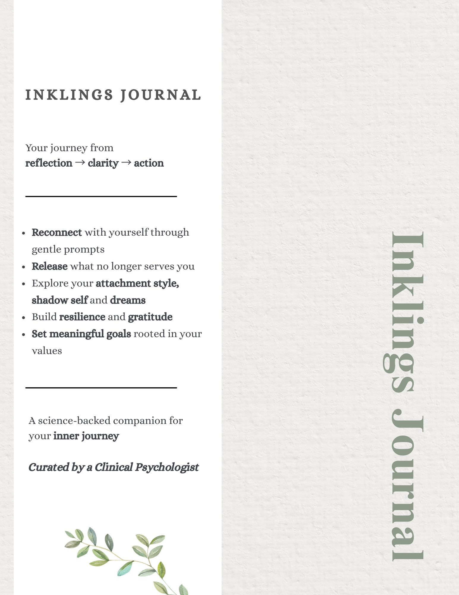

Guided Digital Journal
Reflect.
Regulate.
Intend.
A guided digital journaling experience for clarity, emotional balance, and meaningful living — created by a clinical psychologist.
For the days your thoughts don't stop.
For the days you feel stuck but can't name why.
For the days you want to journal but don't know what to write.
For the days emotions feel confusing or overwhelming.
Get Inklings Journal
₹1500 · one-time

🧠
Therapy-informedCreated by a Clinical Psychologist